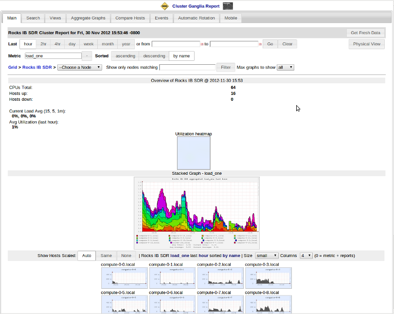

You can check the status of your cluster by pointing a browser
to http://YOUR_FRONTEND_NAME/ganglia/
(see the image below for an example). This link provides a graphical
interface to live cluster information provided
by Ganglia monitors running on
each cluster node. The monitors gather values for various metrics such
as CPU load, free memory, disk usage, network I/O, operating system
version, etc. These metrics are sent through the private cluster network
and are used by the frontend node to generate the historical graphs.
In addition to metric parameters, a heartbeat message from each node is collected by the Ganglia monitors. When a number of heartbeats from any node are missed, this web page will declare it "dead". These dead nodes often have problems that require additional attention, and are marked with the Skull-and-Crossbones icon, or a red background.

Ganglia was designed at Berkeley by Matt Massie (massie@cs.berkeley.edu) in 2000, and is currently developed by an open source partnership between Berkeley, SDSC, and others. It is distributed through Sourceforge.net and GitHub.com under the GPL software license.